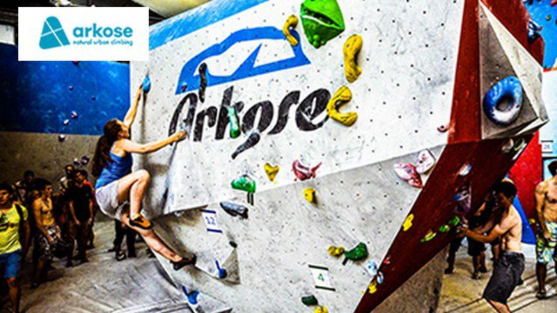
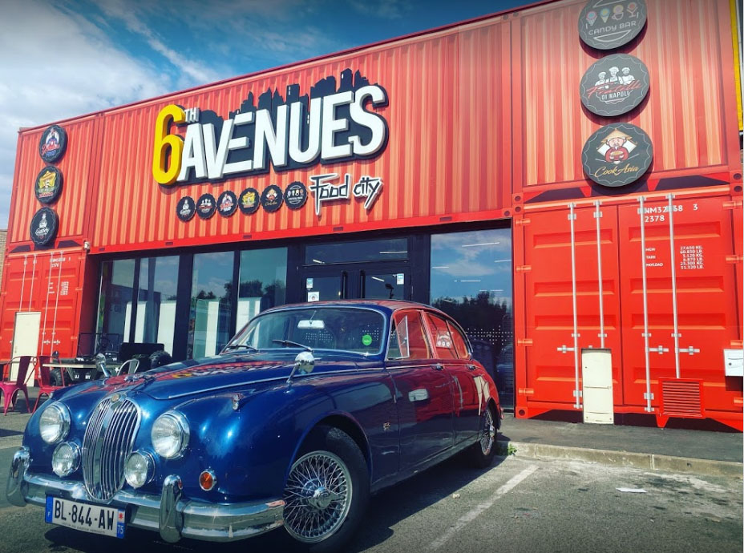

Accueil
Lieux
Marchés & Foires
Actualités
TERRE D'AVENIRS
Devanture du Chicken Street
Space Jump à Fleury mérogis
Paris kart de Wissous
Mairie d'Epinay sous sénart
Laser Quest à Evry
Pagode-khanh-anh,Temple bouddhiste vietnamien
Grande Mosquée d'Evry courcouronnes
Cathredrale de la Ressurection à Evry

Arkose (salle de bloc) à Massy

Restaurant 6 th avenues à Grigny